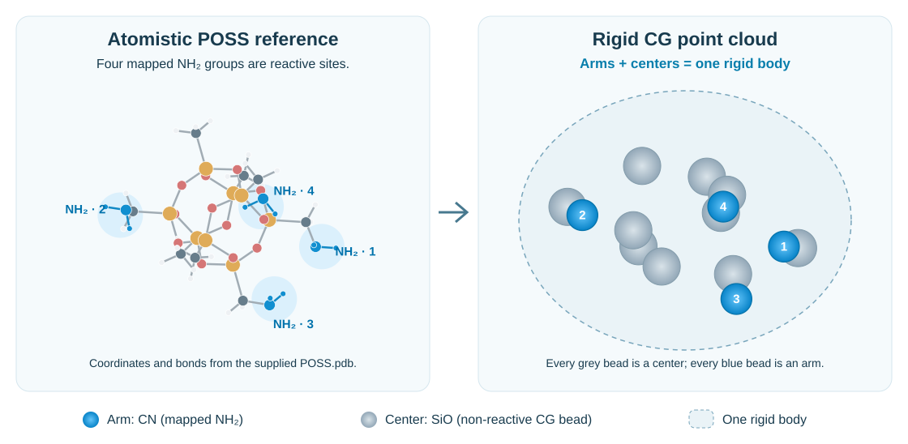

Reaction-DSL¶
Reaction-DSL is a domain-specific language for describing how molecular building blocks connect and how their reactive states change. Define the reactants and functional-group transformations first; a simulation engine then applies these definitions to build a polymer. The language separates chemical construction instructions from the engine’s integration, encounter detection and sampling.
Learn the language with the first example¶
The Quick start runs an existing linear polyimide example.
To turn it into your own system, edit 01_linear_pi/config.json in this order:
Change
reactantsto declare the complete molecules and their starting counts.max_valencelimits CG connections, not the valence of an individual atom.Change each reaction’s ordered
reactantspair and mappedsmartsso its participants and atom-level transformation match the intended chemistry.Choose
kind: "general"for reactions without an active-state requirement, orkind: "radical"andactivationfor active-site propagation.Set any structured
fillersonly if a full reference structure and mapped reactive atom indices are available; a fragment SMARTS is not a full molecule.Re-run CG preparation and check the generated reaction records, then reconstruct the AA system from the matching CG XML and ordered ReactionPath.
The sections below explain each field in this example. For types, defaults and file formats use Input reference; for a worked change in chemistry, continue to Tutorials. A syntactically valid DSL does not by itself establish a chemically valid reaction or equilibrated structure.
Building blocks and their representation¶
Start with three objects: the building blocks available, the transformations they can undergo, and any structured components whose geometry must be preserved.
Object |
Chemical meaning |
Representation |
|---|---|---|
Reactant |
A molecular building block, such as a monomer, or a reactive group on a filler |
A named type defined by molecular SMILES or fragment SMARTS |
Reaction |
A specified transformation between the reactants’ functional groups |
Atom-mapped reaction SMARTS, together with participating types, reaction probability and state changes |
Filler |
A structured component, such as a nanoparticle or biomolecule, with a supplied atomistic geometry |
An all-atom PDB reference and mappings identifying its reactive groups |
A flexible molecular reactant is represented by a CG bead during construction. A filler needs several CG sites to preserve its shape and the spatial arrangement of its reactive groups. From the supplied PDB and mappings, ChemFAST automatically builds a rigid point cloud. Reactive arms are placed at the centres of their mapped atom groups; all other CG beads are non-reactive centers representing the filler body. A center is therefore a type of body bead, not a single extra hub.
All arms and centers together form one rigid body. Their relative positions
remain fixed during CG simulation. In the supplied POSS example, the four mapped
NH₂ groups define four CN arms, while the remaining CG beads belong to the SiO
center type. During AA reconstruction, the PDB supplies the reference geometry
and the arm mappings identify the atoms that participate in reactions.
{kind=link}

POSS filler representation. The atomistic panel uses the supplied PDB coordinates
and bonds. Each mapped NH₂ group becomes a reactive CN arm; every other CG bead
is a non-reactive SiO center. The CG discretization is schematic, with arm
positions calculated from the supplied mappings. Labels 1–4 identify corresponding
groups, not cg_id values.¶
Thus, a filler-bound group is declared as a reactant type but is instantiated through a filler mapping, rather than generated as an independent molecule.
Document structure¶
Use "domd_react_dsl": "v1" as the language-version key in ChemFAST v1.0.0.
All downloadable tutorial configurations use this same spelling.
The following complete configuration defines a dianhydride and a diamine, their
reaction rules, and filenames for subsequent reconstruction:
{
"cg_topology_file": "reaction_final.xml",
"reaction_path_file": "reaction_path.txt",
"reactants": [
{
"name": "A",
"smiles": "O1C(=O)c2ccc(Oc3cc4C(=O)OC(=O)c4cc3)cc2C1=O",
"N": 200,
"max_valence": 2
},
{
"name": "B1",
"smiles": "Nc1ccc(Oc2ccc(N)cc2)cc1",
"N": 200,
"max_valence": 2
}
],
"reactions": [
{
"name": "A-B1",
"kind": "general",
"reactants": ["A", "B1"],
"smarts": "[O:1]=[C:2][O:3][C:4]=[O:5].[NH2:6]>>[O:1]=[C:2][N:6][C:4]=[O:5].[O:3]",
"prod_idx": [
0
],
"intrinsic_probability": 1.0
},
{
"name": "B1-A",
"kind": "general",
"reactants": ["B1", "A"],
"smarts": "[NH2:6].[O:1]=[C:2][O:3][C:4]=[O:5]>>[O:1]=[C:2][N:6][C:4]=[O:5].[O:3]",
"prod_idx": [
0
],
"intrinsic_probability": 1.0
}
],
"domd_react_dsl": "v1"
}
Download the complete configuration.
Field |
Required / default |
Contents |
|---|---|---|
|
Required: |
Language version |
|
Required |
Named types: complete molecules defined by SMILES, or reactive fragments of fillers defined by SMARTS |
|
Required |
Named transformations using atom-mapped reaction SMARTS, with reaction type, probability and optional state changes |
|
Optional: |
Structured components with PDB references and reactive-site mappings |
ChemFAST also accepts file and box options in this document. Their formats, defaults and path resolution are described under Configuration; they are not reaction-language semantics.
Reactants¶
Each entry in reactants declares a type that can be named in a reaction.
Field |
Required / default |
Meaning |
|---|---|---|
|
Required |
Unique, non-empty type name |
|
Exactly one of |
SMILES for a complete molecular building block |
|
Exactly one of |
SMARTS for a reactive fragment within a structured filler |
|
Optional: |
Non-negative integer number of independent molecules; omit for SMARTS-only types |
|
Required; integer ≥ 1 |
Maximum reaction-generated CG connections: how many chemical connections this bead can form with other beads, not an atom’s elemental valence |
|
Optional: |
Initial number of active sites for |
A CG connection can represent more than one atomistic bond formed by the same
transformation. Set max_valence from the intended CG reaction connectivity.
Membership of the filler rigid body does not consume this reaction capacity.
"activate": n selects n sites from the entire population of that type. For a
SMARTS-defined filler-arm type, selection is across all matching arms on all
filler copies, not n arms per filler. If independent molecules and filler arms
share the type, they form one combined pool. The count cannot exceed that pool.
activate does not select the reaction type: kind does that.
Reactions¶
Field |
Required / default |
Meaning |
|---|---|---|
|
Required |
Unique reaction name used in ReactionPath |
|
Required |
One ordered list of type names per rule, e.g. |
|
Required |
Atom-mapped reaction SMARTS specifying participating atoms and their connectivity changes |
|
Optional ChemFAST reconstruction option |
Zero-based indices of the products to retain during AA reconstruction; unselected products are removed |
|
Optional: |
|
|
Required; number in |
Probability factor for attempting an otherwise eligible reaction during simulation |
|
Required for |
Active-state source and destination, using |
|
Optional: |
Type updates applied after an accepted reaction |
Reactant order and atom maps¶
Each reaction rule specifies one ordered list of participating CG types:
"reactants": ["A", "B1"]
If a transformation applies to B1 and B2, write two separately named reaction
rules, one with ["A", "B1"] and one with ["A", "B2"]. The rules may use
the same atom-mapped SMARTS when it matches both molecule types. Each type must
match the SMARTS template in its position; nested lists are not accepted.
The exact rule name is used for its CG bond and ReactionPath events. No
combination suffix is added automatically.
For ["A", "B1"], slot 0 is A and slot 1 is B1. Slot order must agree with:
The dot-separated reactant templates on the left of
>>in SMARTS.The node order in a recorded ReactionPath event.
The indices in
activation.from,activation.toandtype_changes[].node.
Swapping the type names alone changes this correspondence. Atom-map labels such
as :2 and :6 identify atoms across the two sides of SMARTS; they are neither
slot indices nor particle IDs. In the complete example, the mapped nitrogen :6
replaces the anhydride oxygen :3 in the connected product.
For AA reconstruction, use prod_idx to choose which products to retain. Products
are numbered from 0 in their order on the right of >>; "prod_idx": [0]
retains the first, [1] retains the second, and [0, 1] retains both. Unselected
products are removed. In the example, [0] retains the polymer product and removes
the water by-product. If the product order is reversed, use [1] to retain the
same polymer product. When prod_idx is omitted, this product-index filtering is
not applied.
General and radical reactions¶
general reactions select participating types with available reaction
capacity, without requiring an active site. This describes construction such as
coupling between complementary functional groups in step-growth polymerization.
radical reactions additionally require and update an active state. If
activation.from is a slot, that participant must be active and the others
inactive; if it is null, all participants must initially be inactive. After
acceptance, the active state is assigned according to activation.to:
|
|
Meaning |
|---|---|---|
|
|
Initiate activity at slot 0 |
|
|
Transfer activity from slot 0 to slot 1, as in chain propagation |
|
|
Retain activity at slot 0 |
|
|
Quench activity at slot 0 |
For example, "activation": {"from": 0, "to": 1} transfers the active site from
the first reactant to the second. Indices must exist in the ordered reactant list;
from and to cannot both be null. These state operations describe the
specified construction mechanism, not every possible radical termination route.
Intrinsic probability¶
Polymerization during MD is implemented by probabilistically accepting eligible
reaction encounters. intrinsic_probability supplies a user-prescribed factor:
0 disables acceptance and 1 removes this particular probabilistic rejection.
Encounter conditions and any additional sampling factors still depend on the
execution protocol. This construction approach is described by
Liu et al., A kinetic chain growth algorithm in coarse-grained simulations,
J. Comput. Chem. 37, 2634–2646 (2016).
The factor is not a predicted rate constant or equilibrium conversion. Assigning it does not calibrate simulation time to experimental polymerization kinetics.
Type changes¶
Use type_changes when an accepted general reaction changes which subsequent
rules a CG site can participate in. Add this field to the reaction definition:
"type_changes": [{"node": 1, "to": "B_after"}]
Here slot 1 changes to the declared type B_after. Declare that type in
reactants even if its initial N is 0; its max_valence becomes the site’s
new reaction capacity. Subsequent reaction rules must name B_after
where that state is required.
Field |
Meaning |
|---|---|
|
Zero-based reactant slot to update, not a global CG particle ID |
|
Target type name already declared in |
Updates occur in list order after the primary event is accepted, without another
probability draw. Each slot may appear only once, and the resulting connectivity
must fit the target type’s capacity. A type update changes CG state and future
eligibility; it does not replace the atomistic transformation encoded by SMARTS.
radical reactions use activation and cannot also request type_changes.
Structured components¶
A filler is a complete reference structure, while its reactive groups are local
parts of that structure. Define each reactive fragment by SMARTS in reactants,
then map its atoms onto a PDB reference inside fillers.
The following entries illustrate the mapping syntax; substitute your PDB and its actual atom indices before use:
{
"reactants": [
{"name": "ARM", "smarts": "[N]-[C]-[C]", "max_valence": 1}
],
"fillers": [
{
"name": "Core",
"N": 2,
"file": "references/core.pdb",
"mappings": [
{"cg_id": 0, "type": "ARM", "atom_idx": [12, 8, 9]}
]
}
]
}
Field |
Meaning |
|---|---|
|
Filler identifier |
|
Number of copies to construct |
|
PDB reference containing atomistic coordinates; verify the connectivity read from it |
|
List of reactive-site mappings |
|
Local CG site index within the mapped rigid component; unique within its mappings and consistent with its CG site numbering |
|
Declared reactant type for the site, supplying its fragment SMARTS and reaction capacity |
|
Ordered, zero-based RDKit atom indices in the loaded PDB, one per fragment SMARTS atom |
|
For FG: actual rigid-body IDs in the final XML that use this reference |
Each filler requires name, N, file and a non-empty mappings list. Each
mapping requires cg_id, type and atom_idx; counts and indices are
non-negative integers, and an atom_idx list must not repeat an index.
Mapping order is positional. In the example, SMARTS atom 0 (N) maps to reference atom 12, atom 1 (C) to reference atom 8, and atom 2 (C) to reference atom 9. The array is deliberately not sorted. Its length and order must match the SMARTS atoms, and the selected reference fragment must match the pattern. These indices are not PDB serial numbers, atom-map labels or global CG particle IDs. Preserve the reference atom order and hydrogen representation after preparing mappings.
For reconstruction, supply filler_idx from the actual final XML body values.
For example, [4, 9] would associate two rigid bodies with this reference only if
those are their recorded IDs. N: 2 alone does not identify them. Reference-path
resolution is described in Configuration.
Scope and validation¶
The language specifies allowed connectivity and state changes. The execution
engine supplies coordinates, encounter criteria, time integration and sampling;
force-field assignment is another stage. ChemFAST’s generated PyGAMD runner
supports binary rules that add one CG connection, using either general coupling
or radical activity transfer. It rejects type_changes, activation creation or
quenching, unary/multibody rules, and mixed general/radical protocols. These are
language features beyond that runner; see Advanced control.
Product selection with prod_idx applies to AA reconstruction. The current CG
compiler independently derives connectivity from the first SMARTS product;
changing prod_idx does not change that CG compilation step.
Specify activate explicitly for a controlled initial radical population.
In the PyGAMD adapter, if all counts are zero, all source-type sites are activated
by default; a type appearing as both source and target instead requires an
explicit count. This is an adapter initialization policy, not a DSL default.
Check a document before constructing a system:
from chemfast.cg.reaction_dsl import compile_file
model = compile_file("system.json")
Compilation checks required fields, declared types, counts, probability bounds, reaction templates, slot indices and reaction-capacity compatibility. It does not run MD or prove the chemical feasibility of a proposed transformation. Also inspect PDB mappings, final XML/ReactionPath correspondence and the engine’s supported reaction operations before reconstruction.
DSL input is declarative JSON, not a place for executable Python. Treat external runner scripts separately as code. Successful parsing is structural validation; it is not validation of a material’s chemistry, kinetics or physical properties.